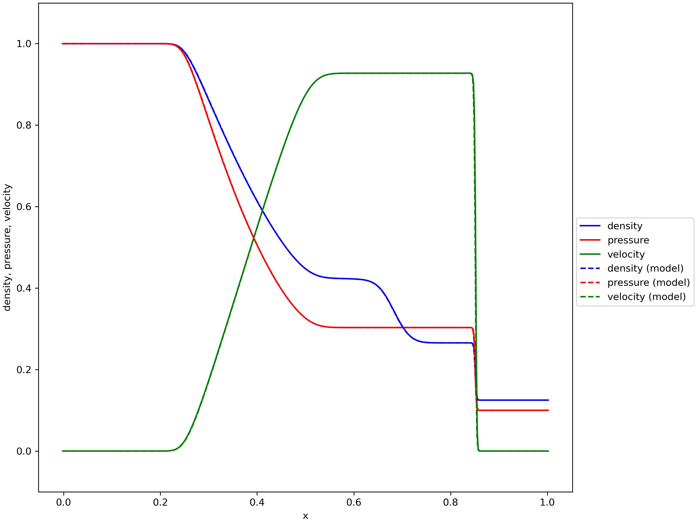
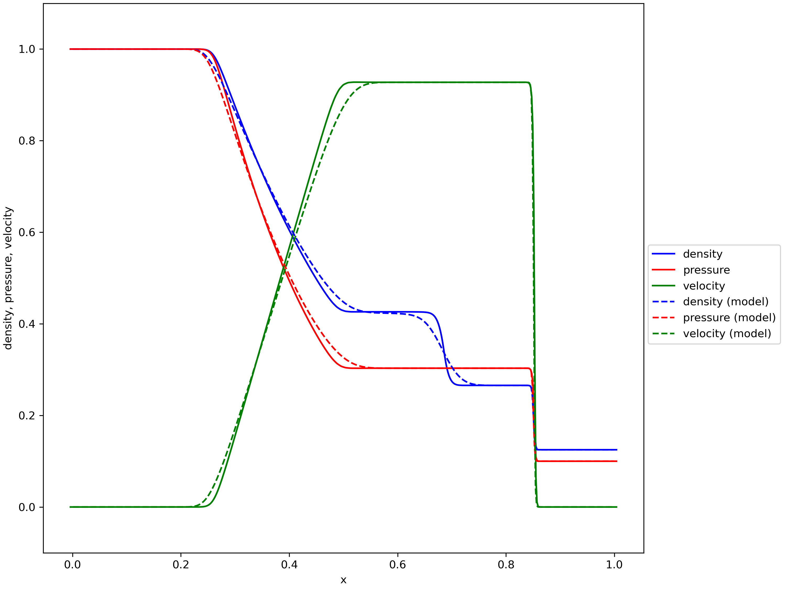
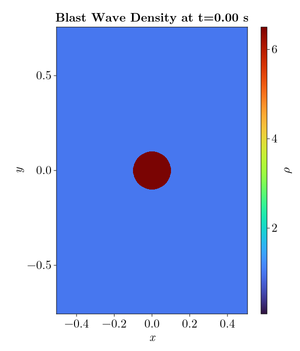
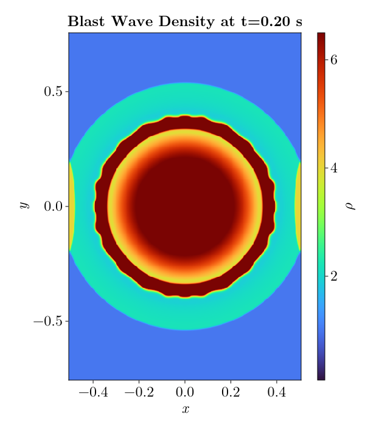
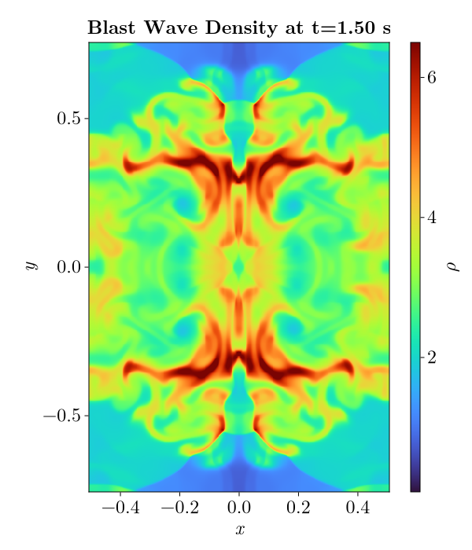
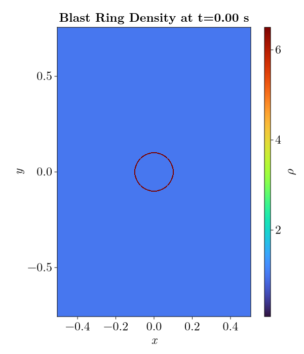
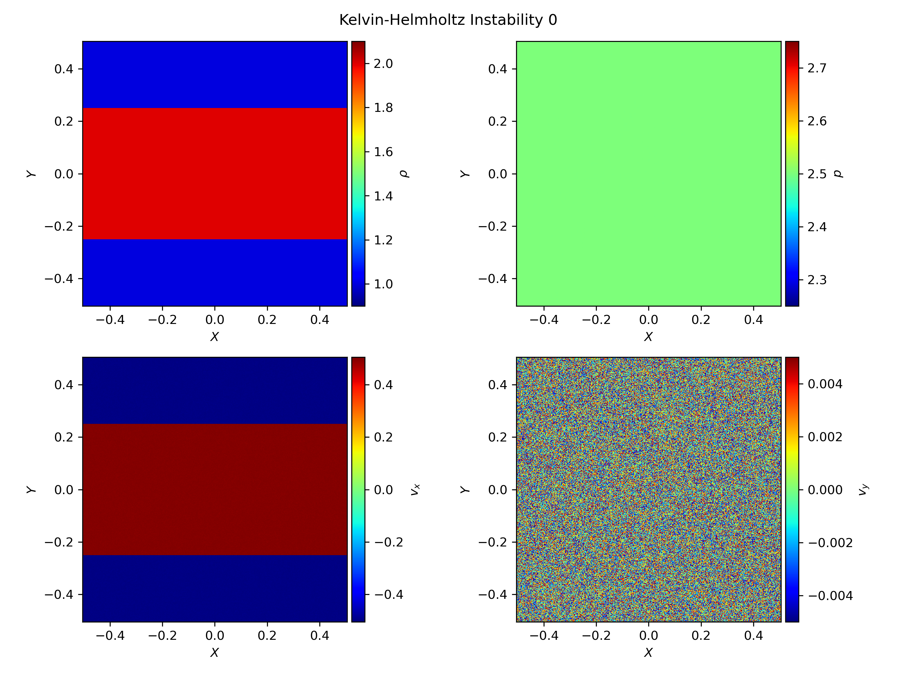
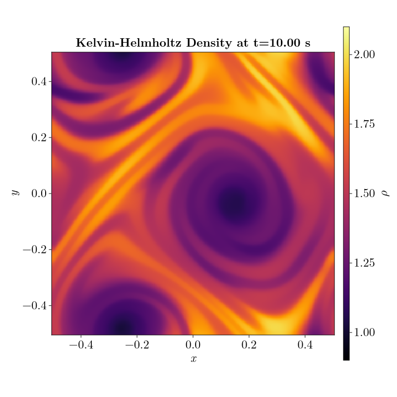

# ENV["GKSwstype"] = "png"usingCairoMakie, Glob, LaTeXStrings, NPZ, PyFormattedStrings# gr()set_theme!() # remove the default theme so get rid of resolution issuebig_texfonts =merge(Theme(fontsize=24), theme_latexfonts())set_theme!(big_texfonts)cmap =:turbodata_folder ="output/data/2D/"bw_data = data_folder*"blast_wave/"br_data = data_folder*"ring/"kh_data = data_folder*"kh/"functionload_frame(file) data =npzread(file) V = data["V"] rho = V[1, :, :] rho =permutedims(rho) x = data["x1"] y = data["x2"]return x, y, rhoendfunctionplot_rho(file, name, interval, frame_num; size=(800, 800), scale=1.0, cmap=:inferno, crange=(0.08, 6.5) ) x, y, rho =load_frame(file) fig =Figure(; size=size.*scale) ax =Axis(fig[1,1], xlabel=L"x", ylabel=L"y", aspect=DataAspect(), title=f"{name} Density at t={frame_num*interval:.2f} s" ) hm =heatmap!(ax, x, y, rho, colormap=cmap, colorrange=crange, )Colorbar(fig[1, 2], hm, label=L"\rho") figend;
1 1D Problem
First I corrected the error with saving the simulation data from the _write_numpy function in output.py. This error came from the line
np.save(self._file_name, (V, g.x1))
This error was caused by the fact that V has shape \((3, 514)\) and g.x1 has shape \((514,)\). numpy is not able to convert these shapes into a single array. The simple solution was to use the numpy function np.savez(self._file_name, V=V, x1=g.x1). This function allows numpy to save the data despite having different shapes. I then modified the plot_1d.py function to read the .npz files.
As well just a little change there was an issue with the files being read in by plot_1d.py not sorted. This lead to the plots showing different simulation snapshots and in the wrong order. I replaced that with files = sorted(glob.glob(f"{data_path}*.npz")). I used glob as it is an easy way to grab all files that follow a specific pattern.
1.1 Reconstruction
1.1.1 Flat Reconstruction
I first implemented the “flat” or Nearest Neighbors reconstruction algorithm.
\[
\mathrm{minmod}(a,b) =
\begin{cases}
a, \qquad \text{if } |a| < |b| \text{ and } a \cdot b > 0 \\
b, \qquad \text{if } |a| > |b| \text{ and } a \cdot b > 0 \\
0, \qquad \text{else}
\end{cases}
\]
delta_V = np.where( delta_minus * delta_plus >0.0, # if a * b > 0.0 np.where( np.abs(delta_minus) < np.abs(delta_plos), delta_minus, # return the value of a if |a| < |b| delta_plus # return the value of b if |a| > |b| ),0.0# otherwise, a * b < 0.0, return 0.0 )
It took me a while to understand how the boundary conditions were used within the program. Eventually I recognized that I was returning the “cell-centered” values rather than the values at the interface. Because of this I needed to slice one more value from each edge to align with the expected shape.
# Calculate the values at the interface of the cellsL = V[:, 1:-2] +0.5* delta_V[:, :-1]R = V[:, 2:-1] -0.5* delta_V[:, 1:]
I then ran the 1D problem using the linear method which lead to some unexpected results which are discussed in Section 1.3
1.2 Time-Stepping
1.2.1 Euler Method
I first implemented the Euler time-stepping method.
# 2nd Order Runge-Kutta# Calculate the intermediate state U_temp = U + dt * RHSOperator(U, grid, algorithms, timing) / dx# Apply boundary conditions grid.boundary(U_temp, parameters)# Based on the past and intermediate state calculate the new state U_new =0.5* (U + U_temp + dt * RHSOperator(U_temp, grid, algorithms, timing) / dx)# Apply boundary conditions grid.boundary(U_new, parameters)
However once I implemented RK2 I ran into some difficulties. When comparing my simulation to the model solution, the simulation with RK2 deviated from the solution where Euler had not. This caused a lot of confusion as RK2 is a 2nd order scheme and thus should be more accurate than Euler integration.
1.2.3 4th Order Runge-Kutta
After implementing RK2 I wanted to implement the 4th order Runge-Kutta (RK4) integration. I understood the method to calculate the intermediate timesteps from RK2. Thus I extended RK2 to calculate the 4 intermediate steps needed for RK4.
The simulation that was best able to recreate the model solution was using the Euler Method and Flat Reconstruction. Figure 1 (a) shows the final image of the simulation. Figure 1 (b) shows the final frame of the 1D simulation using RK4 and linear reconstruction. The “more advanced” methods were not able to recreate the model solution as well as the simpler methods. This is likely due to the nature of the problem we are simulating. The linear reconstruction method makes the features a bit “sharper”, with smaller transition regions between the various features.

(a) Euler time-stepping and flat reconstruction

(b) 4th order Runge-Kutta time-stepping and linear reconstruction
Figure 1: Comparison of shock tube simulation results using various methods.
Given that I was able to recreate the model solution I moved on to the 2D simulations.
2 2D Problems
2.1 Blast Wave Example
The first simulation was the Blast Wave problem described in the detailed project instructions. I changed the problem parameters to be:
\(-0.5<x<0.5\), \(-0.75<y<0.75\)
Resolution: \(400 \times 600\)
Boundary conditions are reciprocal everywhere.
These changes were motivated by the Athena Code Test “Spherical Blast Wave” example. I wanted to compare the blast wave example to the Athena example however there were issues with that which are discussed in Section 2.2.1. If the boundary conditions were “outflow” we would not get complex interactions between the waves in the fluid and the blast would only spread out. As well by changing the dimensions of \(x\) and \(y\) this leads to differences between the vertical and horizontal directions.
# File that corresponds to 0.2 seconds file = bw_data *"data_2D_0100.npz"bw_02_plot =plot_rho(file,"Blast Wave",2e-3,100, ;size=(600, 700), cmap=cmap, crange=(0.08, 6.5) )save("images/bw_02.png", bw_02_plot)
Code
# File that corresponds to 0.2 seconds file = bw_data *"data_2D_0750.npz"bw_final_plot =plot_rho(file,"Blast Wave",2e-3,750, ;size=(600, 700), cmap=cmap, crange=(0.08, 6.5) )save("images/bw_final.png", bw_final_plot)

(a) Initial conditions of the blast wave

(b) Blast wave simulation at 0.2 seconds

(c) Blast wave simulation at 1.5 seconds
Figure 2: The blast wave simulation at various times.
2.1.1 Plotting Method
I created plot_2d.py by copying plot_1d.py and modifying it. First by adding in multiple subplots that showed the different variables. This was a useful method to ensure that the initial conditions of the problem were set correctly. I used pcolormesh to display the images as I am more familiar with that plotting method than imshow. However, eventually I switched over to plotting in Julia when making the animations. Julia provides some very useful plotting features for videos as discussed in Section 3
2.2 Custom Problems
Another change that I made was to save the data and plots based on the Name problem parameter. When switching between the custom problems there were issues with the new problems overwriting old data and plots. By using the name parameter in this way each problem is saved to a unique location. I changed output.py script to use the Name of the problem as another directory for the output folders.
I created two custom 2D simulations. The first was a recreation of the Athena Code Test “Spherical Blast Wave”. The second was a recreation of the Athena Code Test “Kelvin-Helmholtz Instability”.
2.2.1 Blast Ring
This problem is a variation on the initial blast wave problem. When comparing the blast wave Athena Code Test I noticed some discrepancies between the stated initial conditions and the provided demonstration. As Figure 3 (a) shows the initial conditions for the Athena simulation were not an initial overdensity within \(r<0.1\).
Instead the simulation starts from a ring at \(r=0.1\) with the overdensity. I was able to implement this by creating a mask around \(r=0.1\) and setting the overdensity there. After some experimenting I found that a ring with width \(\Delta r = 0.005\) reasonably recreated the Athena simulation. Figure 3 (b) shows this initial setup.
(a) Athena Code Test “Blast Wave” initial conditions

(b) My blast ring initial condition
Figure 3: The initial conditions of the blast ring simulation.
The main comparison for this problem is the creation of “fingers” within the fluid that do not dissipate after creation. As well as the density being symmetric horizontally and vertically throughout the simulation.
Figure 4: Comparison of Athena simulation and my simulation at \(t=0.2\)s.
2.2.2 Kelvin-Helmholtz
For the second custom problem I decided to look at the Kelvin-Helmholtz Instability. This was mentioned in the lectures and produced beautiful videos. The initial conditions I used were based on the Athena Code Test.
\(-0.5 < x < 0.5\), \(-0.75 < y < 0.75\)
Resolution: \(512 \times 512\)
Pressure: \(2.5\) everywhere
\(|y| > 0.25\) has density \(1.0\) and \(v_{x}=-0.5\)
\(|y| < 0.25\) has density \(2.0\) and \(v_{x}=0.5\)
\(v_{y} = 0.0\) everywhere
Reciprocal boundary conditions everywhere
However with just these initial conditions the instabilities did not form. I had missed an important line in the initial conditions:
NoteKelvin-Helmholtz Initial Condition
To seed the instability, we add random numbers to both the x- and y-components of the velocity with peak-to-peak amplitude of \(0.01\).
Without these random velocities the instabilities did not form and the flow continued smoothly. Figure 5 shows the initial conditions of the Kelvin-Helmholtz Instability. While it is not visible in the \(v_{x}\) subplot the \(v_{y}\) subplot shows the initial random velocities.

Figure 5: Initial conditions of the Kelvin-Helmholtz Instability simulation.
Initially I ran this simulation for a simulation time of \(t=1.0\)s. However the instabilities were just beginning to form, unlike in the Athena code test where the instabilities were already visible at one second, see Figure 6.
Figure 6: Comparison of Kelvin-Helmholtz Simulations at \(t=1.0\)s of simulation time.
But as it seemed the instabilities were forming I decided to increase the max time parameter to five seconds to match the Athena simulation. Increasing the simulation time made the simulation take approximately 2.5 hours, using the linear reconstruction method and RK4. Figure 7 shows the instabilities forming at two seconds.
Figure 7: Kelvin-Helmholtz Instability simulation at two seconds.
The simulation does achieve the expected instabilities. However when comparing to the Athena code test there is a lack of detail. There are a few potential reasons for these differences. The main one comes from Athena using more advanced solvers that preserve those small details. The linear reconstruction method is not able to retain those small vortices. As well Athena used the “hllc” Riemann solver while this simulation used “hll”. From what I have seen the hllc solver utilizes a more accurate model of the waves which retains that extra detail.
3 Animation
I attempted many methods for animating the results:
FFmpeg to convert the generated plots to a .mp4 file.
yt-project to make the plots and then stitch them together with FFmpeg.
matplotlib.animation library to automatically make the video
julia plotting as making animations is very easy
animating with the @animate macro using Plots
animating using Observables and CairoMakie
The method that I eventually settled on was to make the animations in Julia using the CairoMakie package. This package makes use of Observables that are variables that julia monitors and uses the GPU to change in place. This method make videos faster than the standard method from matplotlib or making the frames individually and stitching them together.
At first I just plotted the densities using a heatmap to ensure that the videos were generating properly. Once that was confirmed to work I included the other variables pressure, \(p\), and the velocity fields.
The velocity animation took the longest to make work. Initially I wanted to use streamlines to show the velocity flow. However when attempting this in both python and julia there were a few issues. The main one being that the streamlines between frames were not consistent. So the video did not provide an understanding of how the flow changes over time. I changed from using streamlines to using arrows2d which is equivalent to matplotlibs quiver function. This shows the velocity field over time and by sampling specific points within the velocity field it was consistent.
The pressure was made using the same heatmap method as for the density but with a different colorscale. At first I set the pressure colorscale based on the density colorscale and dividing by the value of \(\gamma\) used in that simulation. This generally worked but did not provide all the detail I wanted, so eventually I just tried different values to reveal more detail.
For the animation of the Kelvin-Helmholtz problem I wanted to see the formation of larger vortices so I increased the simulation time to 10 seconds. This took approximately six hours to run using linear reconstruction and RK4. The vortices did grow over time as Figure 8 shows the last frame of the simulation.
This was a interesting project allowing us to dive deeper into computational fluid dynamics (CFD). CFD is a topic I have wanted to explore for a while but have not had the chance to before. It was useful to focus on just a few aspects of the code but being able to see how the various parts of the simulation fit together. I have certainly gained a deeper understanding and appreciation of what it takes to develop a computational fluid dynamics system. As well it was fun making my own simulations and producing beautiful plots and movies.

Figure 8: Kelvin-Helmholtz Instability simulation at 10 seconds.